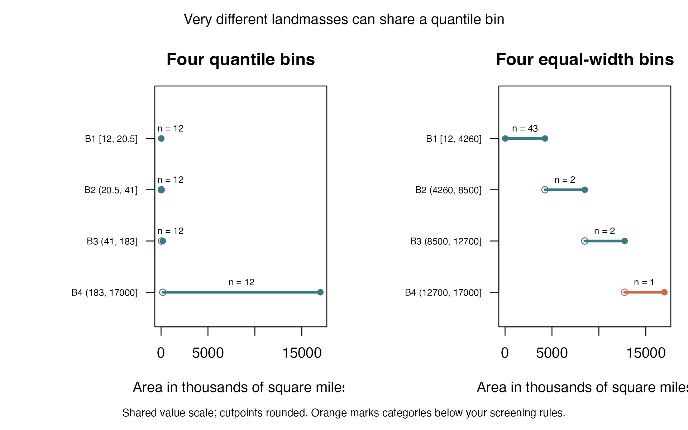
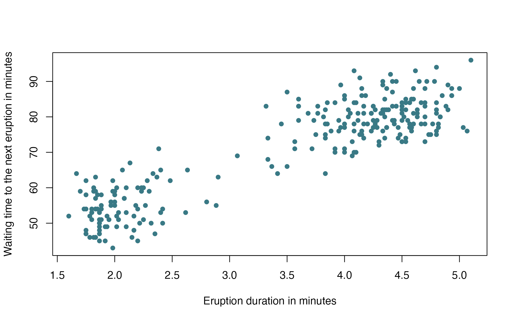
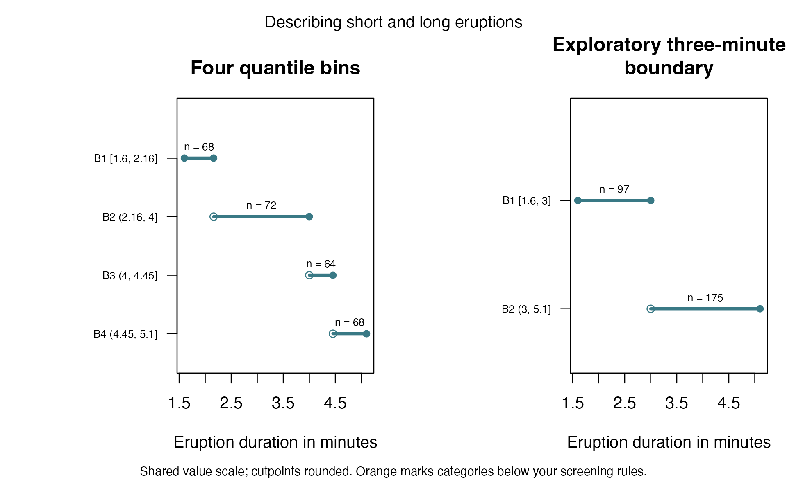

Real data, related packages, and research
Keith A. Preble
Source:vignettes/real-data-and-related-work.Rmd
real-data-and-related-work.RmdWhy use real examples as well as simulations?
Simulations reveal whether a method recovers a rule that we know. Real datasets show what happens with rounding, missing observations, uneven distributions, and relationships whose true form is unknown. Both are useful tests, with different lessons.
Start with the getting-started vignette if you are new to R or
binwise. This companion guide uses three historical
datasets supplied with R. No data files, accounts, optional data
packages, or paper-specific objects are needed. The examples execute
when this guide is built. They are demonstrations of the workflow, not a
systematic benchmark or validation of every package feature.
1. Landmass areas and a very long tail
datasets::islands contains areas of 48 large landmasses,
measured in thousands of square miles. It includes continents as well as
islands and covers landmasses above 10,000 square miles. R’s
documentation attributes it to the 1975 World Almanac and Book of
Facts. These are historical measurements of a selected set of
landmasses, not a random sample of all islands. Dataset
documentation.
The original object is a named vector, so first turn it into a data frame.
landmasses <- data.frame(
landmass = names(datasets::islands),
area = as.numeric(datasets::islands)
)
head(landmasses)
#> landmass area
#> 1 Africa 11506
#> 2 Antarctica 5500
#> 3 Asia 16988
#> 4 Australia 2968
#> 5 Axel Heiberg 16
#> 6 Baffin 184
landmass_comparison <- bin_compare(
landmasses, "area", bins = 4, min_count = 2, min_prop = .01
)
plot(landmass_comparison, type = "boundaries", show_counts = TRUE,
xlab = "Area in thousands of square miles",
main = "Very different landmasses can share a quantile bin",
scheme_labels = c(quantile_4 = "Four quantile bins",
equal_width_4 = "Four equal-width bins"))
landmass_comparison$bins[, c("scheme", "bin", "lower", "upper", "n")]
#> scheme bin lower upper n
#> 1 quantile_4 B1 12.0 20.5 12
#> 2 quantile_4 B2 20.5 41.0 12
#> 3 quantile_4 B3 41.0 183.2 12
#> 4 quantile_4 B4 183.2 16988.0 12
#> 5 equal_width_4 B1 12.0 4256.0 43
#> 6 equal_width_4 B2 4256.0 8500.0 2
#> 7 equal_width_4 B3 8500.0 12744.0 2
#> 8 equal_width_4 B4 12744.0 16988.0 1With only 48 observations, this descriptive example uses a count screen of two, not the package default of 20. That does not make two observations adequate for statistical inference. It simply makes the chosen warning rule explicit.
Look for the broad upper quantile interval and the imbalance of equal-width counts. Quantiles can balance counts while grouping very different areas. Equal widths can preserve absolute size distinctions but leave small groups. A log-scale display is another way to inspect the distribution while retaining the numeric measurements.
Conclusion. This reproduces the long-tail problem in real data. With no outcome in this example, it cannot tell us whether bins improve prediction.
2. Geyser durations and apparent clusters
datasets::faithful contains 272 observations of eruption
duration and waiting time until the next eruption at Old Faithful. Both
are measured in minutes. The R documentation notes substantial rounding
of eruption times and the existence of other versions of these data. Use
this version consistently when reproducing the example. Dataset
documentation.
geyser <- datasets::faithful
plot(geyser$eruptions, geyser$waiting, pch = 16, col = "#397985",
xlab = "Eruption duration in minutes",
ylab = "Waiting time to the next eruption in minutes")
The plot suggests shorter and longer eruptions. For an exploratory descriptive summary, compare quartiles with a three-minute boundary.
geyser_comparison <- bin_compare(
geyser, "eruptions", methods = "quantile",
custom_breaks = list(three_minutes = c(min(geyser$eruptions), 3,
max(geyser$eruptions)))
)
plot(geyser_comparison, type = "boundaries", show_counts = TRUE,
xlab = "Eruption duration in minutes", main = "Describing short and long eruptions",
scheme_labels = c(quantile_4 = "Four quantile bins",
three_minutes = "Exploratory three-minute boundary"))
geyser_groups <- bin_apply(
geyser, geyser_comparison$diagnoses$three_minutes, name = "duration_group"
)
table(geyser_groups$duration_group)
#>
#> B1 B2
#> 97 175Conclusion. A short/long summary can be useful for communication, but three minutes here is an exploratory choice. We have not established a physical threshold or that waiting time is constant within each category. Clusters in a predictor are not enough to establish a step-shaped outcome relationship. Rounding also creates ties that should stay together.
These are observations of one geyser over time. A random row split would not by itself establish performance for future eruptions. This section deliberately makes a descriptive claim only.
3. Air quality, missing values, and held-out months
datasets::airquality contains 153 daily observations
from New York between May and September 1973. Ozone is measured in parts
per billion, temperature in degrees Fahrenheit, wind in miles per hour,
and solar radiation in Langleys. The original sources are the New York
State Department of Conservation and the National Weather Service. Dataset
documentation.
We will predict ozone from temperature, wind, and solar radiation. Only the representation of temperature changes between models. We compare a linear temperature term, a natural cubic spline, and quartile categories.
air <- datasets::airquality
needed <- c("Ozone", "Temp", "Wind", "Solar.R")
colSums(is.na(air[, needed]))
#> Ozone Temp Wind Solar.R
#> 37 0 0 7
sum(complete.cases(air[, needed]))
#> [1] 111There are 111 complete observations for this comparison. The remaining 42 rows are excluded because at least one required measurement is missing. Complete-case evaluation can describe a selected subset; this example does not solve the missing-data problem.
Keep all observations from a month together and leave one month out at a time. The models train on the other four months. The quartile cutpoints are learned using training observations only, including when a held-out temperature is outside the training range. Automatic quantile recipes extend their outermost intervals to cover such values; their internal cutpoints stay training-derived.
air_check <- bin_validate(
air, outcome = "Ozone", variables = "Temp",
controls = c("Wind", "Solar.R"),
schemes = list(quartiles = list(Temp = list(probs = c(0, .25, .5, .75, 1)))),
group = "Month", folds = 5, seed = 12, reps = 0,
spline_df = 3, reference = "spline"
)
air_check$scores
#> model metric score lower upper
#> 1 spline RMSE 21.05 NA NA
#> 2 continuous RMSE 23.54 NA NA
#> 3 quartiles RMSE 21.44 NA NA
#> 4 spline MAE 14.66 NA NA
#> 5 continuous MAE 17.73 NA NA
#> 6 quartiles MAE 15.84 NA NA
air_check$diagnostics
#> fold model training_n test_n unavailable messages
#> continuous 1 continuous 88 23 0
#> spline 1 spline 88 23 0
#> quartiles 1 quartiles 88 23 0
#> continuous1 2 continuous 87 24 0
#> spline1 2 spline 87 24 0
#> quartiles1 2 quartiles 87 24 0
#> continuous2 3 continuous 85 26 0
#> spline2 3 spline 85 26 0
#> quartiles2 3 quartiles 85 26 0
#> continuous3 4 continuous 82 29 0
#> spline3 4 spline 82 29 0
#> quartiles3 4 quartiles 82 29 0
#> continuous4 5 continuous 102 9 0
#> spline4 5 spline 102 9 0
#> quartiles4 5 quartiles 102 9 0reps = 0 omits bootstrap intervals. With only five month
groups, this small example is not a good setting for presenting
cluster-bootstrap intervals as precise evidence. NA in the
interval columns means no interval was calculated. All eligible test
observations receive predictions from all three models.
The pooled RMSE is about 23.54 ppb for the linear temperature model, 21.44 ppb for temperature quartiles, and 21.05 ppb for the spline. The MAE values are about 17.73, 15.84, and 14.66 ppb, respectively. Lower is better. Quartiles improve on a linear temperature term, but the spline gives the lowest pooled errors among these candidates. Check each held-out fold as well.
air_check$fold_scores[air_check$fold_scores$metric == "RMSE", c("fold", "model", "n", "score")]
#> fold model n score
#> 1 1 spline 23 28.90
#> 2 1 continuous 23 29.65
#> 3 1 quartiles 23 29.37
#> 7 2 spline 24 20.47
#> 8 2 continuous 24 26.19
#> 9 2 quartiles 24 19.20
#> 13 3 spline 26 18.52
#> 14 3 continuous 26 20.47
#> 15 3 quartiles 26 18.53
#> 19 4 spline 29 14.83
#> 20 4 continuous 29 18.24
#> 21 4 quartiles 29 17.82
#> 25 5 spline 9 22.68
#> 26 5 continuous 9 21.82
#> 27 5 quartiles 9 21.62Quartiles have lower RMSE in each of the five held-out months, although the size of improvement varies. Categories can improve on a simple linear predictor on real observations while a flexible continuous alternative does better overall. The spline need not win every individual fold. This small comparison does not establish a stable performance ranking in new settings.
Limits of that conclusion. There are just five months from one historical summer, some observations are missing, and days may remain dependent across month boundaries. Training includes months later than the held-out month, so this is not a test of forecasting future months using only the past. It is also not evidence that temperature categories cause ozone changes. The included spline supplies one flexible continuous comparator. Its complexity was specified in advance and its knots learned within each training fold. A better score than a straight line does not identify a uniquely correct set of thresholds.
Related tools have different primary purposes
This is a targeted review of official documentation and primary research, checked on 13 November 2026. It is not an exhaustive review or a performance benchmark. These are adjacent tools with some shared techniques, not a list of interchangeable packages. Software capabilities change.
| Tool | Established capability | Relationship to binwise |
|---|---|---|
Base
R cut() |
Assigns numeric values to intervals and returns categories. | Basic bin creation is already available.
bin_apply() connects assignment to saved diagnostic
schemes. |
dlookr |
Data diagnosis, exploration, transformations, binning, and automated reports. | Shared diagnostic and binning features within a broader exploration package. binwise organizes these steps around evaluating a categorization decision. |
rbin |
Manual, quantile, equal-length, and other binning tools, with category creation and interactive add-ins. | An established alternative for constructing and inspecting bins. |
interflex |
Estimates and diagnoses conditional marginal effects, with binning, kernel, linear, and other flexible estimators. | Uses bins to diagnose conditional effects across a moderator. binwise evaluates the consequences of replacing numeric predictors with categories, including comparisons without interactions. |
binsreg |
Binscatter regression, inference, plotting, bin-number selection, and specification tests. | Related estimation methodology, rather than a direct substitute for this decision workflow. Partitions support curve estimation and inference, including variation within bins. |
cutpointr |
Estimates cutpoints for binary classification and evaluates stability and out-of-sample performance. | Demonstrates that choosing and validating cutpoints is established work. It targets a more specific classification problem. |
In particular, the classic interflex binning diagnostic
estimates conditional marginal effects and allows within-bin moderator
terms. It is not merely a table of outcome averages.
binsreg estimates unknown relationships using partitions
and formal inference. Choosing partitions for curve estimation answers a
different question from choosing substantive categories for a variable.
interflex
binning diagnostic, binsreg
reference.
None of these packages is required to run this guide. They should be
acknowledged and considered when their methods better match a user’s
research question. The comparison above describes scope, not
superiority. binwise currently fits ordinary linear and
binary logistic models, optionally with natural cubic spline terms, in
bin_interact(). It does not supply the specialized
estimators of these packages. Advanced callbacks in
bin_validate() let users bring their own fitting
procedure.
Where to go next
Choose a tool by the question you need to answer. These packages can
complement binwise; this guide does not claim that it
reproduces their methods.
| If you need to… | Consider | What goes beyond the current binwise interface |
|---|---|---|
| Diagnose a whole dataset, investigate missing values or outliers, and compare transformations | dlookr | Broad exploration, transformation, and automated reporting. |
| Estimate how a treatment’s marginal effect varies across a moderator and diagnose interaction assumptions | interflex | Specialized conditional-effect estimators and inference, including support diagnostics. |
| Estimate regression curves with binscatter, construct uniform confidence bands, or test shape restrictions | binsreg | Formal binscatter estimation, inference, and partition selection. binwise’s plotted bands are pointwise model-based mean intervals. |
| Estimate and validate a cutoff for classifying a binary outcome | cutpointr | Classification-specific cutoff optimization, stability assessment, and validation. binwise does not optimize cutpoints against the outcome. |
| Use weight-of-evidence summaries or interactive bin-construction add-ins | rbin | Tools oriented to constructing and evaluating such binning schemes. |
Read each package’s assumptions and documentation before choosing it. None of these options removes the need to define the analytical question, preserve honest validation, and interpret what the resulting estimates mean. The packages are suggested resources here, not dependencies installed automatically by binwise.
What the research says
Arbitrary categorization can be costly. Altman and Royston explain how splitting a continuous measurement can discard information, reduce power, and obscure differences within groups. They also warn against choosing a cutpoint because it yields the most impressive result. This supports retaining numeric originals and making the rationale for cutpoints explicit. Altman and Royston (2006), The cost of dichotomising continuous variables.
Equal counts do not imply similar outcomes. Bennette and Vickers show why quantile categories can impose implausibly constant risk within broad intervals, especially in tails. They advocate flexible continuous relationships and meaningful comparisons. They also distinguish exploratory categorization from using categories as the principal analysis. Bennette and Vickers (2012), Against quantiles.
Binning can help diagnose interaction assumptions. Hainmueller, Mummolo, and Xu examine failures of linear interaction assumptions and inadequate common support. Their binning and kernel comparisons help check whether a simple interaction is credible in regions with sufficient observations. These are diagnostics for a particular statistical question, not a general instruction to categorize every continuous variable. Hainmueller, Mummolo, and Xu (2019), How Much Should We Trust Estimates from Multiplicative Interaction Models?.
Bins also support formal nonparametric methods. Cattaneo, Crump, Farrell, and Feng develop statistical foundations for binscatter estimation, inference, and choosing the number of bins. This is a distinct use of bins from assuming a handful of fixed categories fully describes an outcome relationship. The existence of a rigorous binscatter method does not validate arbitrary thresholds in a different model. Cattaneo and colleagues (2024), On Binscatter.
Cutpoint validation is established practice. Thiele
and Hirschfeld explain how choosing an apparently optimal classification
cutoff can exaggerate performance. Their cutpointr package
includes robust estimation and validation methods. Selection and
evaluation need to be separated, a principle that also motivates
training-only bin recipes and honest evaluation in binwise.
Thiele and
Hirschfeld (2021), cutpointr.
A credible role for binwise
Our assessment is that the potential contribution is an accessible, connected workflow for making and documenting a binning decision. That includes plain language, counts next to ranges, explicit treatment of meaningful zeros and signed values, saved reusable schemes, and shared-sample prediction comparisons. It should help users discover when categorization is unhelpful as readily as when it is useful.
The distinction from dlookr is purpose and organization.
Its broad exploration and transformation workflow includes useful
binning functions. binwise is organized around evaluating
whether categorization serves a stated analytical purpose, including
what happens when the numeric predictor is retained in a flexible form.
That distinction does not make the individual techniques new.
This is a product and teaching contribution, not evidence that binning, interaction diagnostics, or held-out evaluation are new statistical methods. The individual techniques are established. Any claim of methodological novelty would need a specific new statistical contribution and a focused comparison. The distinct purpose of this workflow should be assessed on its own merits. Beginner usability testing and broader comparisons of the implemented alternatives would be useful next steps before a public release.
Reproducibility
All three real datasets remain in R’s datasets package;
this guide does not redistribute separate copies. The code uses their
documented versions and records the session below. The supplied
simulated examples are described in ?binwise_examples and
?binwise_interaction.
sessionInfo()
#> R version 4.6.1 (2026-06-24)
#> Platform: aarch64-apple-darwin23
#> Running under: macOS Golden Gate 27.2.1
#>
#> Matrix products: default
#> BLAS: /Library/Frameworks/R.framework/Versions/4.6/Resources/lib/libRblas.0.dylib
#> LAPACK: /Library/Frameworks/R.framework/Versions/4.6/Resources/lib/libRlapack.dylib; LAPACK version 3.12.1
#>
#> locale:
#> [1] C.UTF-8/C.UTF-8/C.UTF-8/C/C.UTF-8/C.UTF-8
#>
#> time zone: America/New_York
#> tzcode source: internal
#>
#> attached base packages:
#> [1] stats graphics grDevices utils datasets methods base
#>
#> other attached packages:
#> [1] binwise_0.0.17
#>
#> loaded via a namespace (and not attached):
#> [1] digest_0.6.39 desc_1.4.3 R6_2.6.1 fastmap_1.2.0
#> [5] xfun_0.62 splines_4.6.1 cachem_1.1.0 knitr_1.52
#> [9] htmltools_0.5.9 rmarkdown_2.32 lifecycle_1.0.5 cli_3.6.6
#> [13] sass_0.4.10 pkgdown_2.2.1 textshaping_1.1.0 jquerylib_0.1.4
#> [17] systemfonts_1.3.3 compiler_4.6.1 tools_4.6.1 ragg_1.5.2
#> [21] bslib_0.12.0 evaluate_1.0.5 yaml_2.3.12 otel_0.3.0
#> [25] jsonlite_2.0.0 rlang_1.3.0 fs_2.1.0